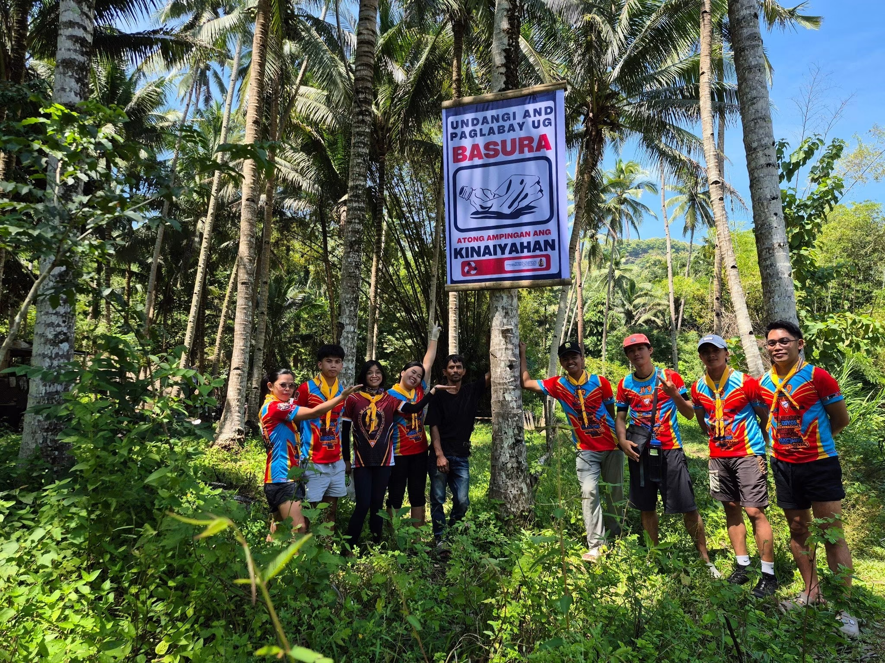
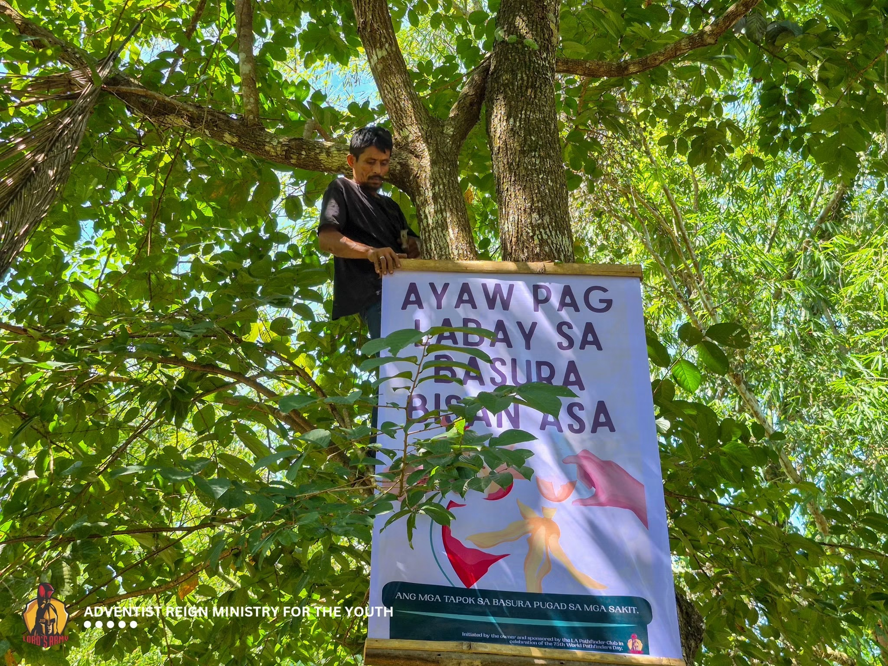
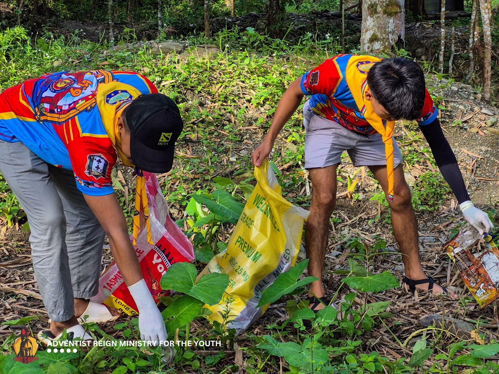

In celebration of the 75th World Pathfinder Day, the Lord's ARMY Pathfinder Club, together with the youth and Pathfinders of Mambatangan SDA Church, conducted a meaningful Clean-Up Drive at Lagilay Falls, Balubal, Cagayan de Oro City. The activity was a powerful reminder of our responsibility to care for the environment and keep it clean for future generations.
"It was a wonderful experience trekking from the dam to Lagilay Falls—cleaning the rivers while appreciating the beauty of God's creation. The activity reminded us of our responsibility to care for the environment and keep it clean."
Lord's ARMY Pathfinder ClubThe clean-up drive began with a trek from the dam to Lagilay Falls, a journey that allowed participants to not only clean the rivers but also appreciate the breathtaking beauty of God's creation. The lush greenery, the flowing waters, and the serene atmosphere served as a backdrop for a day of meaningful service and reflection.
As the group moved along the river, they collected trash and debris, ensuring that the natural beauty of the area was preserved. The activity was not just about cleaning—it was about fostering a deeper connection with the environment and understanding the importance of stewardship.


Advocacy Through Action
As part of their advocacy, the club installed two poster signages encouraging future nature enthusiasts and visitors to be patient with the environment and responsible with their waste. This effort was requested by the landowner, who had been deeply concerned about irresponsible littering by some visitors.
The signages serve as a constant reminder to all who visit Lagilay Falls to treat the environment with respect and care. They are a testament to the club's commitment to environmental stewardship and its desire to inspire positive change in the community.
"The earth is the Lord's, and everything in it, the world, and all who live in it."
Psalm 24:1 (NIV)Pathfinder on Purpose
Through this simple yet impactful gesture, the Lord's ARMY Pathfinder Club hopes to inspire not only their community but also everyone who visits Lagilay Falls to preserve the environment. Truly, this reflects their purpose: "Pathfinder on Purpose."
The clean-up drive was more than just an environmental activity—it was a declaration of faith and commitment. It showed that being a Pathfinder means taking action, leading by example, and making a difference in the world. It demonstrated that small acts of service, when done with love and purpose, can create ripples of change that extend far beyond the immediate moment.

Building a Culture of Care
The success of the clean-up drive at Lagilay Falls highlights the importance of community involvement in environmental conservation. When people come together with a shared purpose, they can achieve remarkable things. The event served as a powerful example of how faith-based organizations can play a vital role in caring for the planet.
Looking ahead, the Lord's ARMY Pathfinder Club remains committed to environmental stewardship. They plan to continue organizing clean-up drives and other initiatives that promote sustainability and environmental awareness. Their goal is to build a culture of care that extends beyond the Pathfinder community and inspires others to take action.
"We hope to inspire not only our community but also everyone who visits Lagilay Falls to preserve the environment. This is what it means to be a Pathfinder on purpose."
Lord's ARMY Pathfinder ClubA Call to Action
The 75th World Pathfinder Day Clean-Up at Lagilay Falls was a celebration of service, stewardship, and faith. It was a reminder that every action, no matter how small, can make a difference. As Pathfinders, we are called to be stewards of God's creation, to care for the earth and all its inhabitants.
We invite everyone to join us in this mission. Whether it's participating in a clean-up drive, reducing your waste, or simply appreciating the beauty of nature, every effort counts. Together, we can create a cleaner, greener, and more sustainable world for future generations.